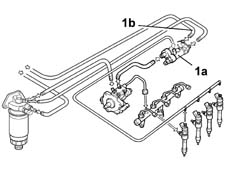

1060A Check low pressure fuel circuit
- Path
- Test > 10 ENGINE UNIT > 1060 DIESEL FUEL INJECTION > 1060A Check low pressure fuel circuit
- Kind
- test / check procedure
- Applies to
- engines: 1.9 JTD 8V; all production periods
- Interactive page
- https://sloeber94.github.io/elrnDB-fMltpl/en/#/2892386
Applies to: engines: 1.9 JTD 8V; all production periods
Connect the pressure transducer of the Examiner/SDC diagnostic instrument between the fuel return manifold (1a) and the return pipe to the tank (1b).

Turn the ignition on.
Check that, within 30 seconds, the pressure gauge's reading is less than 1 bar.